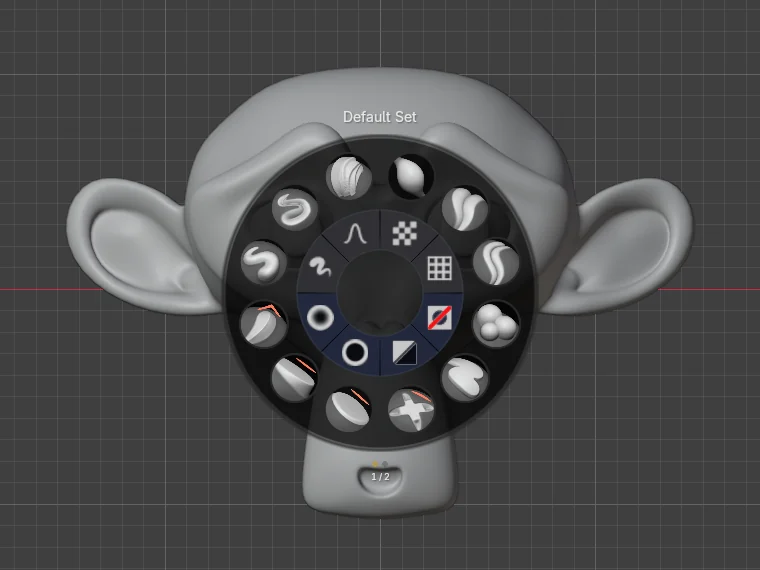

Blazing fast
One gesture instead of three clicks. Seconds saved on every brush switch add up to hours.
Blender add-on · Available on Superhive
A radial wheel that pops up under your cursor in every sculpt and paint mode. Hold Space, flick, keep working.
Can't afford it, or want to try it before buying? Get it free on GitHub. Every purchase supports an independent developer.

Why artists love it
Everything you reach for, arranged around your cursor.
One gesture instead of three clicks. Seconds saved on every brush switch add up to hours.
Brushes keep their place on the ring, so your hand learns where they are.
Sculpt, Texture, Vertex and Weight Paint, hair curves, and all Grease Pencil modes.
Brush sets and custom buttons for any workflow. Switch sets in a click.
Uses Blender's own brush assets, panels and operators. Nothing to relearn.
A modern extension, tested on Blender 5.3 and 5.2.
Out of the box
Each mode gets its own wheel with Blender's Essentials brushes and the settings that matter there. Click a mode to explore it.
User guide
Edit › Preferences › Get Extensions, open the v menu and choose Install from Disk… Or drag & drop the zip into Blender.
Select a mesh, enter Sculpt Mode, hover the viewport and hold Space.
1 / 2 when a set has more brushes than fit. Scroll to switch.Two preferences change this: Select on Release picks what's under the cursor when you release Space; Keep Open keeps the wheel open until you press Space again.
Brush sets control the outer ring. Open the sidebar with N in the 3D Viewport, go to the Wheel tab, and use Brush Sets. Each mode has its own sets.
Custom buttons fill the center pie. Manage them under Custom Button Sets in the same tab. Click + and choose:
Runs a Blender operator, e.g. paint.mask_flood_fill#mode='INVERT'.
Opens a panel or menu as a popup, e.g. Stroke or Falloff settings.
Pick from a curated list of what Blender shows in the current mode.
Type any panel, menu or operator ID by hand.
In Edit › Preferences › Add-ons › Sculpt-Paint Wheel.
Preferences, brush sets and custom buttons live in preferences.json, in an spwheel folder inside Blender's user configuration directory.
Space is bound in Sculpt, Sculpt Curves, Vertex Paint, Weight Paint, Image Paint and the four Grease Pencil paint modes. There it replaces Blender's play-animation shortcut; playback still works from the Timeline.
Sculpt-Paint Wheel Modal Hover the 3D Viewport, be in a supported mode (not Object or Edit Mode) with an active object, and check that no other add-on uses Space there.
Some operators need context, such as a Multires modifier or an existing keyframe. The system console shows the reason.
Expected on Blender 5.3: falloff moved into the new Shape panel for mesh modes.
The set has more brushes than fit: scroll the mouse wheel to change pages.
Still stuck? Open an issue with your Blender version, the mode, steps to reproduce, and any console error.
Questions
Yes. Sculpt-Paint Wheel is open source (GPL-2.0-or-later, like Blender). If you can't afford it, or want to try it before buying, get it free from the releases page. If it earns a place in your workflow, please buy it on Superhive.
Blender 5.1 and newer; 1.1.0 is tested on 5.3 and 5.2. For Blender 4.x, use the original Sculpt-Paint Wheel.
It only uses Blender's own Python and drawing APIs, so it's available everywhere Blender runs. Testing so far has been on Windows; please report anything odd on other platforms.
In sculpt and paint modes, Space opens the wheel instead. Playback still works from the Timeline and with Space in other modes. You can rebind the wheel in the Keymap preferences.
Weight Paint wheels show a weight dial instead: pick any weight from 0.0 to 1.0 in one gesture. Brushes and weight tools are in the center buttons.
Yes. Remove your sets for that mode in the Wheel tab; the Default Set is recreated the next time Blender starts.
Buying it on Superhive supports an independent developer. Sculpt-Paint Wheel has been around for about 6 years thanks to the people who support it: every purchase pays for porting, testing and fixing it for each new Blender release, and keeps it available to everyone.
No. Everyone gets the same add-on. Buying it is a way of saying thanks and keeping the project alive.
No questions match. Try the full search.
Available on Superhive
Sculpt-Paint Wheel has been around for about 6 years, thanks to the people who support it. Buying it on Superhive supports an independent developer and funds updates for every new Blender version, fixes and new features.
Can't afford it, or want to try it first? It's open source, just like Blender: get it free on GitHub.
↑↓ navigate Enter open